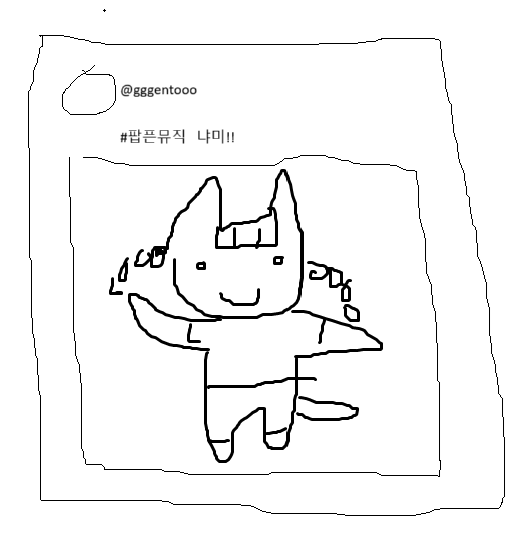
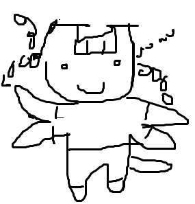
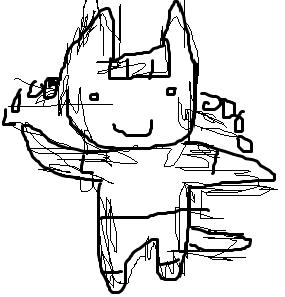

이미지 생성 AI는 윤리적으로 사용될 경우 유용하지만, 현상은 원작자의 동의 없이 수집된 자료가 학습에 사용되어 많은 창작자들에게 피해를 입히고 있는 상황입니다.
어느 인터넷 플랫폼에 작품을 업로드하던지간에, 해당 작품이 무단 도용되어 AI 학습에 사용되는 것을 막기는 어렵습니다.
따라서, 본 글에서는 이미지가 허락 없이 AI 학습에 사용되더라도 AI가 유의미한 산출물을 생성하는 것을 차단하고, 나아가 AI에게 해가 되게 하는 창작물 보호 프로그램인 Glaze와 Nightshade에 대해 이야기하고자 합니다.
들어가기 전에, AI가 어떤 식으로 창작자의 스타일을 도용하는지에 대해 설명하겠습니다.
예시로, 인터넷에 @gggentooo라는 유저가 이런 포스트를 올렸다고 해 보겠습니다.

AI 학습에는 데이터가 아주 많이 필요하기 때문에, 일반적으로는 이 이미지를 사람이 수동으로 저장해서 AI에게 전달하지 않습니다. 자동화된 프로그램이 해당 이미지, 그리고 이미지와 함께 업로드된 데이터를 한꺼번에 정리해서 AI 학습 데이터에 포함시킵니다.
또한, 실제로 어떤 이미지(그리고 그 이미지와 연관된 정보)를 AI가 이해하는 방식은 꽤 복잡하지만, 원활한 이해를 위해 본 글에서는 단순화하여 비유하겠습니다.
AI는 해당 이미지를 보고 생각합니다.
"아, 이 이미지는 팝픈뮤직의 냐미를 묘사한 그림이구나! 팝픈뮤직의 냐미는 귀가 뾰족하고 양갈래가 있구나! 그리고 gggentooo라는 유저는 굵은 선으로 된 그림체를 가지고 있군!
이제 AI는 팝픈뮤직의 냐미가 어떻게 생겼는지도 알고, gggentooo라는 유저의 그림체를 따라하는 법도 압니다. (물론, 실제로 이미지 한 장으로 AI가 정확한 학습을 하기는 어렵지만, AI가 접근할 수 있는 데이터의 양이 이미 워낙 방대하기에 별 의미는 없습니다.)
이로 인해 gggentooo는 여러 가지 피해를 입습니다.
gggentooo를 일러스트레이터로 고용하고 있던 회사는 이렇게 생각합니다.
"어라, 지금까지 gggentooo에게 돈을 주고 그림을 그리게 시키고 있었는데, AI를 사용하면 공짜로 똑같은 퀄리티의 그림을 생성할 수 있잖아?"
gggentooo는 해고당합니다.
AI가 gggentooo의 그림체를 무단 도용하여 팝픈뮤직의 냐미가 파란색이 된 그림을 생성하고, 업로드합니다.
gggentooo의 그림을 좋아하던 또다른 유저는 이렇게 생각합니다.
"이럴 수가... 나의 냐미는 파랗지 않아! 지금까지 gggentooo가 원작과 똑같이 생긴 냐미를 그려서 좋아했는데! 이제 gggentooo의 그림이 싫어!"
gggentooo는 팔로워를 1 잃습니다.
Nightshade는 AI가 데이터를 받아들이는 형식을 오염시켜, 잘못된 학습을 하게 유도합니다.
위 그림에 Nightshade를 적용시키면, 사람의 눈에는 별 차이가 없어 보입니다. 그러나, AI의 눈에는 다음과 같이 보입니다.

AI는 이제 이렇게 생각합니다.
"아, 이 이미지는 팝픈뮤직의 냐미를 묘사한 그림이구나! 팝픈뮤직의 냐미는 귀가 네모나고, 머리가 4갈래고, 팔이 4개구나!"
AI로 이미지를 생성하려는 유저가 "팝픈뮤직의 냐미를 그려줘" 라는 프롬프트를 입력합니다. AI는 귀가 네모나고, 머리가 4갈래고, 팔이 4개인 냐미를 그립니다. 이전에는 AI의 냐미 그림과 사람의 냐미 그림을 구분하기 어려웠지만, 이제는 일반 유저도 AI 생성된 냐미 그림을 쉽게 구분할 수 있습니다.
그러나, AI는 아직 gggentooo의 그림체를 따라할 수 있습니다. 이를 막기 위해서 gggentooo는 그림에 Glaze도 적용합니다.
Glaze가 적용된 그림은 AI의 눈에 다음과 같이 보입니다.

AI는 이렇게 생각합니다.
"gggentooo라는 유저는 삐쭉삐쭉한 선으로 된 그림체를 가지고 있군!"
이제 AI로 이미지를 생성하려는 유저가 "gggentooo의 그림체로 그림을 그려 줘" 라고 입력해도, gggentooo의 실제 그림체인 굵은 선화가 아닌, 삐쭉삐쭉한 선으로 된 그림이 생성됩니다. 마찬가지로, 인간 유저는 쉽게 이것이 gggentooo의 그림이 아님을 구분할 수 있습니다.
이미지에 텍스쳐나 노이즈 필터를 씌우는 것은 Glaze 적용을 대체할 수 없습니다. Glaze는 이미지에 랜덤 노이즈를 씌우는 것이 아니라, 복잡한 알고리즘을 통해 데이터를 오염시키는 방식으로 작동합니다. 따라서 단순한 노이즈 필터와는 다르게 이미지 압축이나 크롭 등으로도 제거할 수 없고, AI에게 훨씬 강력하게 작용합니다.
Glaze와 Nightshade는 둘 다 시카고 주립대학에서 개발된 프로그램으로, Glaze가 창작자의 고유 스타일 보호를 위해 먼저 만들어졌으며, 이후 Nightshade가 AI 학습 데이터 전반을 오염시키기 위해 추가로 생겨났습니다.
둘 모두 AI의 이미지 학습을 방해하는 것이 목적이지만, 작동 방식에는 차이가 있습니다. 간략하게 설명하자면 다음과 같습니다.
시카고 주립대학은 창작물에 Glaze와 Nightshade를 둘 다 적용할 것을 권장하고 있습니다.
Glaze와 Nightshade는 둘 다 무료로 위 링크에서 다운로드하여 사용할 수 있습니다.
WebGlaze의 경우, 검증된 인간 창작자들에게만 회원가입 권한이 주어지고 있습니다. 트위터 혹은 인스타그램 @TheGlazeProject로 DM을 보내면 개별적으로 안내가 주어지는 형식이므로, 참고하면 좋습니다.
*